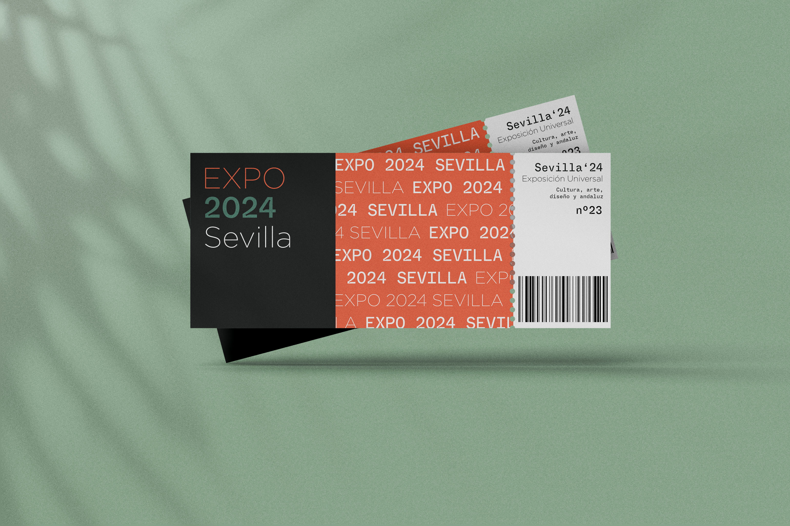
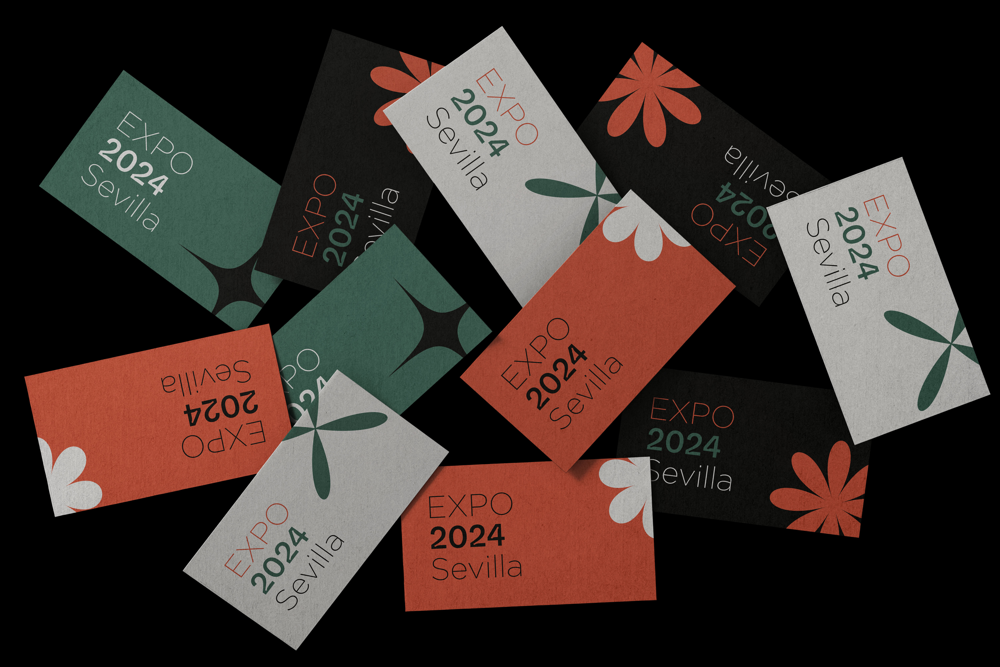
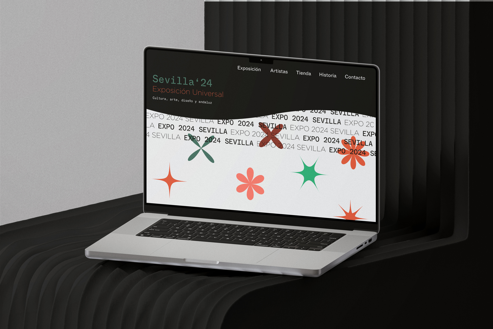
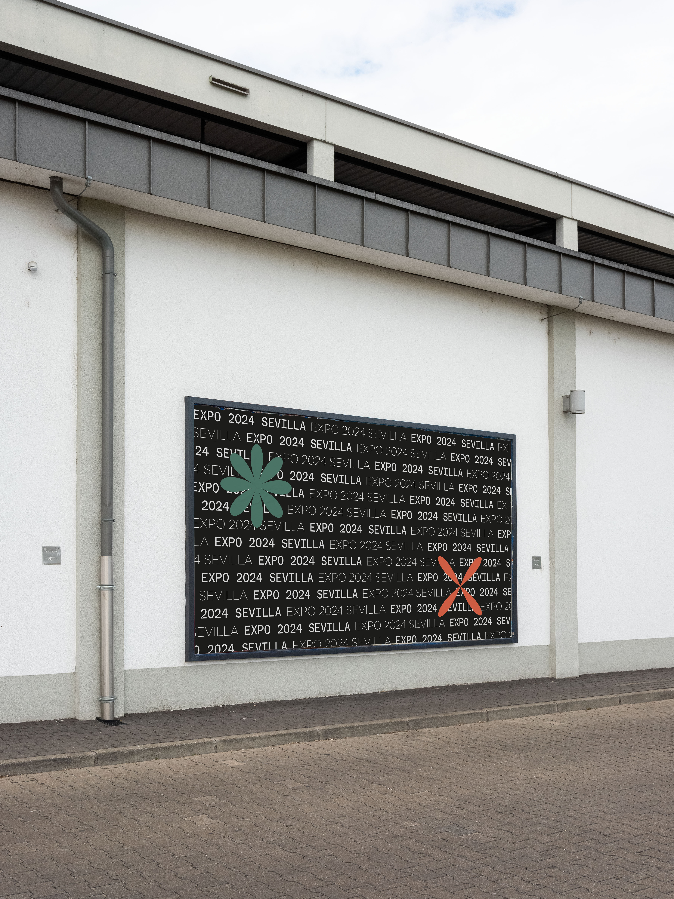
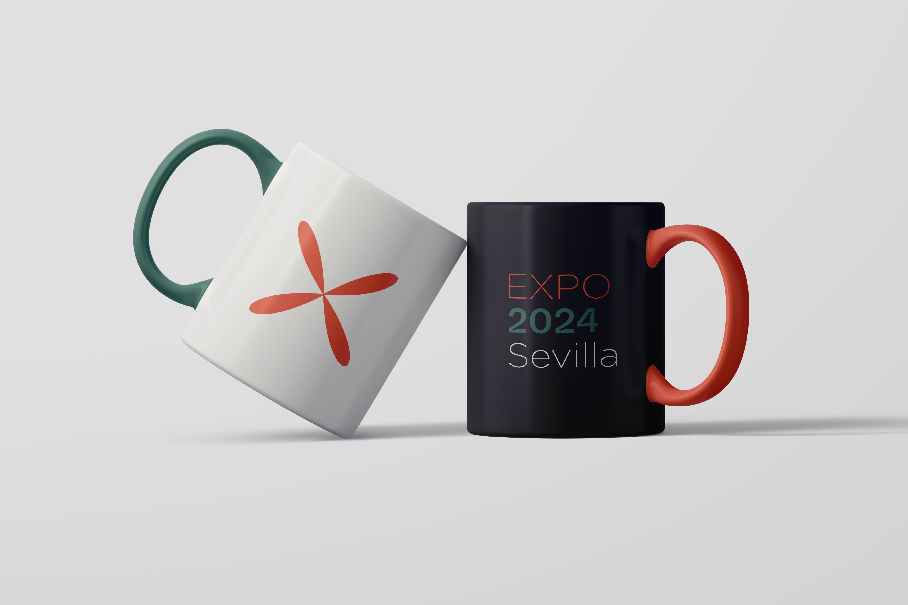

Expo — Sevilla 2024
 Poster 01.jpg)
Role
Visual identity, Logo design
Type
University project · Fictional event
Year
2023
Tools
Illustrator, Photoshop, Adobe XD
A graphic system for a fictional Universal Exhibition in Seville in 2024, celebrating Andalusian culture, art and design. The event is set in the Real Fábrica de Artillería, a historic building that gives the exhibition its cultural setting.


The logo. The main logo is the core of the identity. It brings together elements that evoke both Andalusian tradition and modernity.
The palette. The colours come from the warm tones of the sun and the earth, with brighter accents that capture the region's energy. They also nod to Seville's best-known fruit: the orange.


Built to work, not only to look good. The system was designed to be functional as well as expressive: every element is meant to catch attention, stay memorable for visitors and represent Andalusia's cultural heritage.







.jpg)



The result is a simple, compact graphic system in which the logo and the palette carry the identity of the event.
